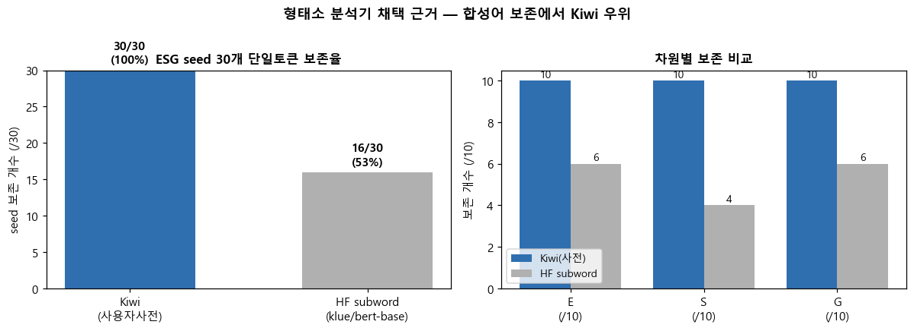
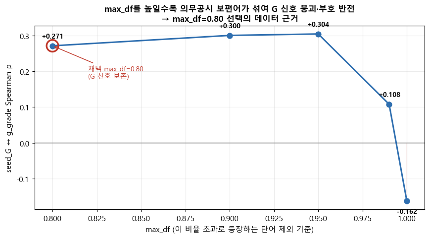
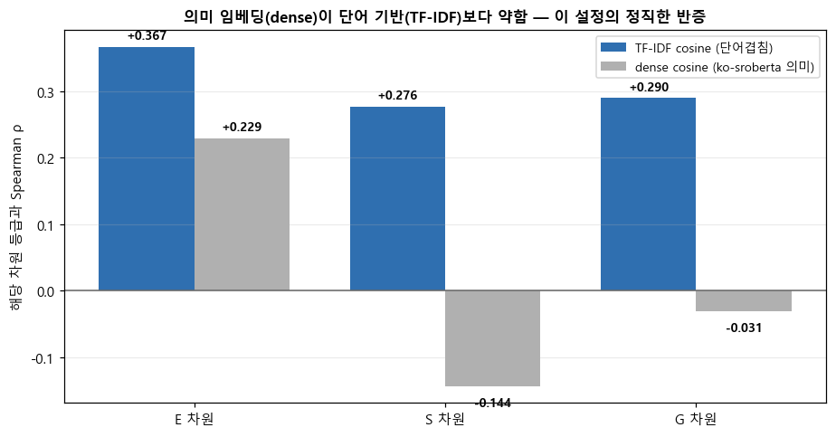
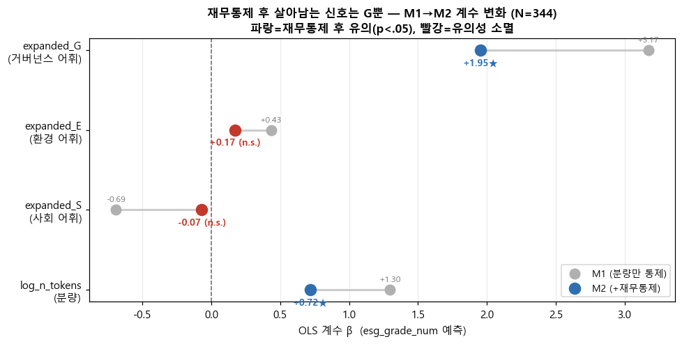
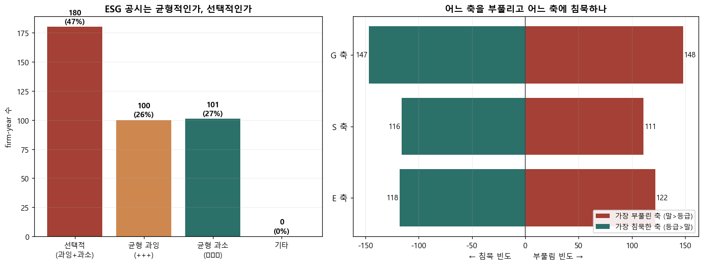

방대한 분석 노트북(102셀)을 발표자·이동원이 단번에 숙지하고 심층 질의응답에 대비하기 위한 문서다.
교수님께서 "기술적 디테일은 ipynb로 확인하고, 발표의 핵심은 스토리텔링"이라 하셨기에 — 코드는 걷어내되 각 단계가 무슨 이야기를 하는지(왜 그렇게 했고, 무엇을 발견했는지)를 흐름으로 설명하고,
시사점·제언의 근거 사슬과 선행연구와의 차별점을 함께 짚는다. 그리고 각 파트마다 교수님이 던질 법한 심층 질의를 그 자리에 미리 배치해 안내한다.
이 표본에서 ESG 공시 어휘는 등급과 연관되지만 그 상당 부분은 '분량' 착시이며, 이를 걷어내면 거버넌스(G) 어휘만이 견고한 신호로 남는다.
더 나아가 기업들은 ESG를 고르게가 아니라 '축을 골라' 말하는데 — 약한 사회(S)는 말로 가리고 강한 거버넌스(G)는 정당하게 부각하는 — 규모로 환원되지 않는 구조적 정합성·편향이 존재한다.
1
수집
381 firm-year DART
2
전처리
Kiwi+사전 seed보존
3
Feature
TF-IDF·FastText·cos
4
검증
분량 ρ=0.66 발견
5
회귀
통제 후 G만 견고
6
알파
Talk–Walk 진단
7
결론
발견·시사·한계
발표 스토리라인 — 이 순서대로 한 편의 이야기가 된다
질문을 던진다. "ESG를 강하게 말하는 기업이 실제 등급도 높은가?" 그리고 그 연관이 내용 때문인지 '그냥 길게 써서'(cheap-talk) 때문인지 가른다.
첫 반전. 등급과 가장 강하게 연관된 건 ESG 어휘가 아니라 보고서 분량(ρ=0.66)이었다 — "길게 쓰면 잘한 것처럼 보이는 착시".
착시를 걷어낸다. 분량·규모·수익성을 통제하자 살아남은 진짜 신호는 거버넌스(G)뿐. 환경(E)은 '큰 기업 효과'였다.
개별 기업으로 내려간다. 등급 대비 말이 앞서는지(과잉)·뒤지는지(과소)를 말–실행 격차(Talk–Walk Gap)로 점수화 — 44%가 불일치, 60%는 3년 고정된 구조적 특성.
마지막 발견. 기업은 ESG를 고르게가 아니라 '축을 골라' 부풀린다 — 약한 사회(S)는 말로 가리고(은폐), 강한 거버넌스(G)는 정당하게 부각(시그널링).
그래서 무엇인가. ESG 공시는 정보 전달이 아니라 전략적 언어다 → 기업·투자자·평가자를 위한 제언으로 닫는다.
선행연구와 무엇이 다른가 (대비 포인트)
"선택적 공시 = greenwashing"이라는 통념을, 축을 분해해 반증한다
기존 연구greenwashing 측정의 거의 전부가 ESG를 하나로 합친 점수(공시점수−성과점수)를 쓴다 → "어떤 축은 부풀리고 어떤 축은 침묵하는가"라는 축 간(cross-pillar) 선택을 구조적으로 못 본다.
Bingler 2022기후 공시의 cherry-picking을 다뤘으나 어디까지나 기후(E) 내부의 중대/비중대 선택 — E·S·G 세 축을 각 축의 KCGS 등급에 견준 것은 아니다.
본 분석gap_E·gap_S·gap_G를 따로 보유 → 세 축을 각 축의 실제 등급에 견줘 비교한 결과, S는 약점 은폐(2.08≪3.03)·G는 강점 시그널(2.43>2.31)로 갈렸다. 단일 점수로는 결코 안 보이는 firm-level 진단. (검색 가능한 범위에서 한국 DART 사업보고서에 이 설계를 적용한 선례를 찾지 못함.)
0
한눈에 — 연구 질문과 설계
research question · design
연구 질문. "사업보고서에서 뽑은 ESG 어휘의 강도가 KCGS ESG 등급과 통계적으로 연관되는가? 그 연관을 '그냥 길게 쓴 것'(cheap-talk)과 어떻게 구분하는가?"
— 등급을 맞히는(예측) 문제가 아니라, 공시 언어와 외부 평가 사이의 패턴을 데이터로 확인하는 것이 목표다(인과 아님).
타이밍.esg_year = fiscal_year + 1 — KCGS 평가연도 t는 직전 회계연도 t−1의 사업보고서와 연결. (단, 제공 CSV의 esg_year가 fiscal_year와 동일값이라, 보고서는 가이드 규칙대로 고르되 등급은 CSV가 각 fiscal_year 행에 부여한 값을 신뢰해 결합 — 한 해 어긋날 가능성은 §7 한계에 명시.)
▶해석 규율(전 구간 적용). 우리는 평가가 무엇을 보상하는지(구조)를 본다. 기업이 거기 반응했는지(행동)는 보지 않는다. 모든 문장은 "~할 수 있다(may)" 수준이며 인과·행동변화는 주장하지 않는다.
무슨 이야기인가. 이 연구는 "등급을 잘 맞히는 모델"을 만드는 게 아니다. 만약 정확도가 목표였다면 분량 하나만 넣어도 설명력이 크게 오른다 — 하지만 그건 cheap-talk를 정당화할 뿐 경영학적 의미가 없다. 그래서 우리는 처음부터 "무엇이 등급과 연관되고, 그 연관이 분량 착시인지 진짜 신호인지"를 분리하는 데 초점을 맞췄고, 그 결과 통제(분량·재무)가 분석의 중심축이 됐다. 이 한 줄의 설계 선택이 §4~§6 전체의 성격을 결정한다.
Q 이 파트에서 예상되는 심층 질의 — 설계의 정당성
Q. 등급을 예측(머신러닝)하지 않고 왜 상관·회귀만 했나요?
한 줄 답: 연구 질문이 '예측'이 아니라 '공시 언어와 외부 평가의 패턴 확인'이라서. 예측이 목표면 분량만 넣어도 R²가 오르지만 그건 cheap-talk 정당화일 뿐. → 하단 Q&A A·1
Q. 인과가 아니라면 이 분석의 쓸모는 무엇인가요?
한 줄 답: 격차·축 편향은 인과 증명이 아니라 '더 들여다볼 후보'를 골라주는 진단 신호. 평가가 무엇을 보상하는지(구조)를 본다.
1
데이터 수집 — 381 firm-year
collection · lineage
KCGS ESG 등급 보유 127개 상장사 × 3개 회계연도(2022–2024)의 DART 사업보고서를 수집하고, 식별자·등급·텍스트를 연결한다.
무엇을·어떻게
섹션 추출(Decision Box ⑥). 사업보고서 전체가 아니라 ESG 신호가 모인 3개 대분류만 추출한다 — II.사업의 내용(E·S 핵심), IV.경영진단(E·S·G 통합), VI.이사회 등 기관(G 핵심). 대분류 로마숫자 TITLE만 경계로 쓰고 TABLE 블록·10자 미만은 제거.
▶핵심. 전수 100% 수집에 성공했고, 실패 시 가짜 0으로 메우지 않고 기록만 했다(정직성). 글자수 편차 42배는 이후 분량(cheap-talk) 통제의 필요성을 예고한다.
무슨 이야기인가. 분석의 신뢰는 데이터 혈통(lineage)에서 시작한다. 사업보고서 전체가 아니라 ESG 신호가 모이는 3개 섹션만 골라 잡음을 줄였고(II 사업의 내용·IV 경영진단·VI 이사회 등 기관), 정정공시는 원본>기재정정>첨부정정 순으로 우선순위를 정해 같은 firm-year가 중복되지 않게 했다. 무엇보다 수집 실패를 '가짜 0'으로 메우지 않고 그대로 기록한 점이 중요하다 — 없는 값을 0으로 채웠다면 "ESG를 한 마디도 안 한 기업"이 인위적으로 생겨 이후 모든 상관이 오염됐을 것이다. 그리고 이 단계에서 이미 기업 간 분량이 42배 벌어진다는 사실이 드러나, "분량을 통제하지 않으면 안 된다"는 뒤 이야기의 복선이 깔린다.
Q 이 파트에서 예상되는 심층 질의 — 데이터 신뢰성
Q. 381 firm-year로 한국 상장사 전반을 말할 수 있나요?
한 줄 답: 없습니다. KCGS 등급 보유사 중 의도적으로 고른 pilot 패널(무작위 아님)이라 모집단 추론 불가 → 모든 결론은 "이 표본에서는"으로 한정. → 하단 Q&A C·1
Q. 왜 사업보고서 전체가 아니라 3개 섹션만 추출했나요?
한 줄 답: ESG 신호가 집중된 II·IV·VI만 경계로 잘라 잡음(재무표·보일러플레이트)을 줄이기 위함. 대분류 로마숫자 TITLE만 경계로 사용.
Q. 수집 못 한 firm-year는 어떻게 처리했나요?
한 줄 답: 가짜 0으로 메우지 않고 기록만 했습니다(정직성). 다만 누락이 비무작위면 corpus가 편향될 수 있어 §7 한계에 명시.
2
전처리 — 형태소 분석기·seed 보존·불용어
tokenization · stopwords
한국어 TF-IDF 품질은 형태소 분석기에 좌우된다. ESG seed 30개 중 재생에너지·감사위원회·탄소중립 같은 복합명사를 단일 토큰으로 보존하는가가 핵심 기준.
왜 Kiwi + 사용자 사전인가 (3축 비교)
분석기
seed 보존
복합명사
판정
Kiwi (기본)
18/30 (60%)
탄소중립·감사위원회 분리
부족
Kiwi (사용자 사전)
28/30 (93%)
6/6 보존
★ 채택
Okt
20/30 (67%)
감사위원회·중대재해 분리 (G·S 손실)
사전 미지원
HF subword (klue/bert)
16/30 (53%)
넷제로→넷##제##로 분할
합성어 파괴
불용어(Decision Box ⑨). 기본 78 + 회사명 토큰 132 + 보일러플레이트 30 = 통합 238 → seed 제외 후 237개. 회사명 분해 시 혼입된 에너지(한화에너지 등)를 seed 강제 보호로 자동 제거 — 없었으면 E 신호가 0이 될 뻔.

시각화 1 · 형태소 분석기 채택 근거
Kiwi 사용자 사전(28/30)이 ESG 합성어를 단일 토큰으로 보존하는 반면 HF subword(16/30)는 특히 S·G 합성어를 ## 조각으로 분할한다. 사전 기반 ESG seed score 측정엔 합성어 보존이 핵심 → Kiwi 채택이 세 번째 비교축에서도 정당화.
▶핵심. seed 보존율 60%↔93% 차이는 G·S 차원 feature 품질에 직결. 이 한 끗 차이가 분석 전체의 토대다.
무슨 이야기인가. 한국어 분석에서 토크나이저는 '사소한 도구 선택'이 아니라 측정의 토대다. 감사위원회·재생에너지·탄소중립 같은 ESG 합성어가 감사/위원회로 쪼개지면 그 단어의 ESG 신호 자체가 사라진다. 그래서 분석기를 "ESG seed 30개를 단일 토큰으로 얼마나 보존하는가"라는 한 가지 기준으로 줄세웠고, Kiwi+사용자 사전(28/30)이 Okt·HF subword를 앞섰다. 한 가지 더 흥미로운 디테일 — 회사명을 불용어로 지우다 보면 한화에너지의 에너지처럼 ESG 핵심어가 함께 지워질 뻔했는데, seed 강제 보호 장치가 이를 막았다. 없었으면 E(환경) 신호가 통째로 0이 될 뻔한 아찔한 지점이다.
Q 이 파트에서 예상되는 심층 질의 — 전처리 선택
Q. 명사만 쓰는 bag-of-words면 문맥·부정(否定)을 못 잡지 않나요?
한 줄 답: 맞습니다, 명시적 한계. "배출 증가"와 "배출 감축"이 똑같이 E 점수를 올림 → 점수를 '성과'가 아니라 '어휘 강조도'로만 해석. → 하단 Q&A C·3
Q. 분석기를 seed 보존율 하나로만 골라도 되나요?
한 줄 답: 사전 기반 ESG 측정에선 합성어 보존이 곧 신호 품질이라 가장 직접적 기준. Okt(사전 미지원)·Komoran(느림)·Kkma(매우 느림)는 별도 사유로도 기각.
3
Feature 생성 — TF-IDF · FastText · Cosine
vocabulary · embedding
토큰을 ESG 어휘강도 점수로 바꾼다. 세 가지 측정: seed(원 30단어), expanded(FastText로 확장), cosine(기준문장 유사도).
왜 max_df=0.80인가 — G의 cheap-talk 핵심 증거
TF-IDF 파라미터 min_df=5, max_df=0.80, sublinear_tf=True. 핵심은 max_df: 이사회·사외이사·주주(100% 등장)·감사위원회(95%) 등 G seed 7개가 vocab에서 제외된다. 이건 버그가 아니라 "전 문서에 나오는 의무공시어는 변별력이 없다"는 의도된 동작 — G cheap-talk의 핵심 증거다.

시각화 2 · max_df 선택 근거 (robustness sweep)
max_df를 높여 의무공시 보편어를 포함시킬수록 seed_G↔g_grade 상관이 0.27(0.80) → 0.108(0.99) → −0.162(1.0)로 붕괴·반전한다. 보편어(이사회·주주)를 다 넣으면 ρ가 음수가 됨 → 이들은 변별력 없는 boilerplate. max_df=0.80은 artifact가 아니라 G 신호 보존에 필수.
FastText 확장 + 큐레이션
θ=0.65(cosine threshold)로 seed 주변 유사어를 확장(후보 493개, 잡음 1.0%). 자동 필터 + 차원별 cosine 내림차순 전수 수동 검토로 인명(최성락 등)·기관명(블룸버그)·형태소 오분리(디자·원재재)를 기각. 최종 EXPANDED_DICT: E 121 · S 26 · G 316.
차원
seed 평균
expanded 평균
변화
의미
E 환경
0.113
0.333
+195%
정상 측정
S 사회
0.067
0.109
+63%
희소(인권·중대재해)로 낮음
G 지배
0.009
0.197
+2185%
★ expanded 정당성 최강 — seed 제외분을 대폭 보완
⚠︎다중공선성. 같은 차원 seed↔expanded 상관: E r=0.937·S r=0.817(동시 투입 금지) / G r=0.177(투입 가능). 그래서 회귀는 feature set별로 분리(M1a seed / M1b expanded / M1c cosine). cosine은 값이 0.02 수준으로 거의 직교 → 약한 보조 baseline으로만 해석.
무슨 이야기인가. 여기서 가장 직관에 반하는 결정이 나온다 — max_df=0.80으로 이사회·주주·감사위원회 같은 G 핵심어를 일부러 버린다. 얼핏 "G를 과소측정하는 것 아니냐"는 반발이 나오지만, 이 단어들은 거의 모든 보고서에 의무적으로 등장해 변별력이 0이다. 실제로 다 넣으면 seed_G↔등급 상관이 0.27에서 음수(−0.16)로 반전한다(시각화 2). 즉 max_df 컷은 버그가 아니라 "의무공시 상투어는 G 신호가 아니다"라는 발견 그 자체다. 빠진 자리는 FastText로 확장한 expanded_G가 메우는데, G는 seed↔expanded 상관이 낮아(r=0.18) 둘이 겹치지 않는 정보를 담는다 — 그래서 G만이 뒤 회귀에서 끝까지 살아남을 자격을 갖춘다.
Q 이 파트에서 예상되는 심층 질의 — feature 설계
Q. max_df=0.80으로 이사회·주주를 빼면 G를 과소측정하는 것 아닌가요?
한 줄 답: 반대로 빼야 G 신호가 살아납니다. 보편어를 다 넣으면 ρ가 0.27→−0.16으로 반전 → 변별력 없는 boilerplate라는 증거. 실제 G는 expanded_G가 담당. → 하단 Q&A A·3
Q. 왜 0.85·0.97은 안 봤나요? 최적값을 찾은 건가요?
한 줄 답: '최적점 탐색'이 아니라 '민감도 곡선의 모양' 확인이 목적. 0.99부터 붕괴·반전한다는 게 핵심이고 어느 값이든 최종 결론은 불변. → 하단 Q&A A·4
Q. FastText 확장이 자의적으로 단어를 넣은 것 아닌가요?
한 줄 답: θ=0.65 자동 필터 후 차원별 cosine 내림차순 전수 수동 검토로 인명·기관명·형태소 오분리를 기각. 최종 E121·S26·G316.
4
Validity 검증 — 분량(cheap-talk)의 발견
spearman · mann-whitney
회귀로 직행하기 전, 각 feature가 등급과 실제 연관되는지 순위상관(Spearman)·집단차이(Mann-Whitney)로 확인. 여기서 이 프로젝트의 결정적 발견이 나온다.
n_tokens ↔ esg등급
ρ=0.663
★ 모든 ESG 어휘보다 강함
expanded_E ↔ e등급
0.451
ESG feature 중 최강
expanded_G ↔ g등급
0.426
예상과 일치 (G는 G에)
A이상 vs B+이하 분량
2.1배
7,523 vs 3,547 토큰
▶cheap-talk 발견. 분량이 어떤 ESG 어휘 feature보다 등급과 강하게 연관(0.663 > 0.451). "내용이 좋아서"가 아니라 "길게 써서" 등급이 높아 보이는 착시 → 모든 회귀에 log_n_tokens 통제 필수. 40개 검정 모두 FDR<0.05이나 유의 ≠ 효과크기(ρ 0.2~0.45는 약~중).

시각화 3 · 의미 임베딩(dense) vs 단어겹침(TF-IDF) — 반증 결과
한국어 SBERT(ko-sroberta) 기반 의미적 dense cosine이 오히려 등급과 더 약하게 연관됐다(E: dense 0.229 < TF-IDF 0.367; S·G는 음수/무의미). 즉 "더 정교한 의미 임베딩이 항상 낫다"는 통념을 이 표본에서 반증 — 단어 기반 측정의 가치를 정직하게 확인.
무슨 이야기인가. 회귀로 직행하지 않고 먼저 순위상관·집단차이로 "각 feature가 등급과 진짜 연관되는지"를 확인하는 단계다. 그리고 여기서 프로젝트 전체를 뒤집는 발견이 나온다 — 어떤 ESG 어휘 feature보다 보고서 분량(n_tokens)이 등급과 가장 강하게 연관(ρ=0.663)됐다. A등급 이상 기업은 B+ 이하보다 평균 2.1배 길게 쓴다. "내용이 좋아서 등급이 높다"가 아니라 "길게 써서 높아 보인다"는 cheap-talk 착시의 직접 증거이고, 이 한 발견이 이후 모든 회귀에 log_n_tokens 통제를 의무로 만든다. 덤으로, 더 정교해 보이는 의미 임베딩(dense)이 오히려 더 약했다는 결과(시각화 3)는 "최신 기법이 늘 낫다"는 통념을 정직하게 반증한다.
Q 이 파트에서 예상되는 심층 질의 — 분량 발견의 해석
Q. 분량을 통제(잔차로 제거)하는 게 정당한가요? 분량 자체가 ESG 노력 아닌가요?
한 줄 답: 그래서 버리지 않고 따로 살려 보고합니다. 분량은 '교란이자 그 자체로 흥미로운 발견'의 두 역할. §5에서 계수를 함께 공개. → 하단 Q&A A·2
Q. 40개 검정이 다 유의하다는데 그만큼 강한 결과인가요?
한 줄 답: 유의 ≠ 효과크기. FDR 보정 후에도 유의하지만 ρ는 0.2~0.45로 약~중간. 표본이 커서 유의해진 면을 정직하게 인정.
5
회귀 — 통제 후 견고한 신호는 G뿐
OLS · ordered · binary · 재무통제
등급은 D~A+ 서열변수라 한 모형을 믿지 않고 OLS·Ordered Logit·Binary Logit 3종으로 교차검증. 모든 모형에 분량(M1)을, 다시 재무(규모·수익성·레버리지)까지(M2) 통제.
feature (expanded)
M1 β (분량통제)
M2 β (+재무통제)
판정
expanded_G (거버넌스)
+3.174
+1.955 (p<.001)
★ 끝까지 견고
expanded_E (환경)
+0.432
+0.172 (p=.40)
유의성 소멸 = 규모 교란
expanded_S (사회)
−0.695
−0.070 (p=.92)
비유의 (M1·M2 모두)
log_n_tokens (분량)
+1.297
+0.718 (p<.001)
절반↓이나 견고

시각화 4 · 재무통제 전후(M1→M2) 계수 변화
파랑=재무통제 후에도 유의, 빨강=소멸. G(거버넌스)만 통제 후에도 견고(β 3.17→1.96★). E는 소멸(0.43→0.17, n.s.) — M1에서 보이던 환경 신호의 상당 부분이 "큰 기업이 환경 서술↑·등급↑"이라는 규모 착시였음을 정직하게 드러낸다. 분량은 절반으로 줄지만 견고.
▶핵심. ⑴ 분량이 3종 모형 모두에서 압도적 유의(cheap-talk 확증) ⑵ expanded_G가 유일하게 분량·규모·수익성 통제 후에도 견고(1 SD↑ ≈ 0.26등급↑) ⑶ S는 모든 모형에서 무관/음수.
(모형 한계: ordered logit 비례오즈는 S에서 위반, seed_G는 분리로 추정 불안정 → 방향만 읽고 3중 교차검증으로 보강.)
무슨 이야기인가. §4의 단순 상관은 "분량 착시"에 오염돼 있을 수 있다. 그래서 이제 분량을 통제한 뒤(M1), 다시 기업 규모·수익성·레버리지까지 통제한 뒤(M2)에도 어떤 ESG 어휘가 등급과 함께 가는지를 본다. 결과는 깔끔하다 — 거버넌스(G)만 끝까지 살아남는다(β 3.17→1.96). 반면 환경(E)은 재무통제를 넣자 유의성이 사라진다(0.43→0.17). 이건 M1에서 보이던 환경 신호의 상당 부분이 사실은 "큰 기업이 환경 서술도 많고 등급도 높다"는 규모 착시였다는 뜻이다. 등급은 D~A+ 서열변수라 한 모형도 완벽하지 않기에 OLS·Ordered·Binary 3종을 교차검증했고, G는 세 모형 모두에서 유의했다.
Q 이 파트에서 예상되는 심층 질의 — 회귀·모형 선택
Q. 회귀를 왜 3개나 돌렸나요? 하나로 충분하지 않나요?
한 줄 답: 등급이 서열변수라 단일 모형의 가정이 모두 불완전(OLS 등간 위반·ordered 비례오즈 위반·binary 정보손실). 깨끗한 단일 모형이 없어 방향 일치로 교차검증. → 하단 Q&A A·5
Q. 왜 E·S는 약하고 G만 살아남나요?
한 줄 답: G는 사외이사 수·감사위원회처럼 코드화·검증 가능한 구조적 사실이라 VI 섹션에 정형화. S는 서술·자기보고, E는 정량데이터가 주로 지속가능보고서에 있어 사업보고서에선 규모와 얽힘. (단, '보상 구조' 해석이지 G가 본질적으로 더 중요하다는 뜻 아님) → 하단 Q&A B·1
Q. 같은 기업이 3번 반복되는데 pooled로 돌려도 되나요?
한 줄 답: 한계로 인정(기업 FE·군집 SE 미적용, p-value 낙관적일 수 있음). §6 지속성·robustness로 기업 단위 안정성을 별도 확인, 후속과제로 명시. → 하단 Q&A C·4
6
알파 — 말–실행 격차(Talk–Walk Gap) 진단
★ 메인 알파 (김혜성)
한 회사가 자기 등급에 비해 사업보고서에서 ESG를 과하게 떠드는지(과잉) vs 실력보다 조용한지(과소)를 점수로 만들어 유형화하고 경영 제언을 도출한다. 격차 = 말 − 실행.
격차 점수 만들기 (4결정)
① 분량 착시 제거:talk_resid = resid(expanded_score ~ log_n_tokens) — 길이로 설명되는 몫을 빼고 순수 강조도만(검증 r≈0). ② 단위 통일: 말·등급 각각 z-score. ③ 격차:gap = z(talk) − z(grade) (양수=과잉, 음수=과소). ④ 차원: E·S·G 각각 + 종합 gap_ESG.
📐수치 읽는 법.r≈0·gap 평균≈0은 설계상 당연(검증 표시지 발견 아님). 실제로 읽을 값은 SD=1.079(격차의 폭)와 개별 z. 양극단: 과잉 1위 백광산업(3년 D인데 z_talk +1.4), 과소 1위 KB·신한금융지주(A+인데 z_talk 음수).
▶통념 반증. 수익성은 유형 간 차이 없음(p=0.21) → 과잉공시는 '부실기업의 변명'이 아니라 '소형주의 상징적 공시'. 그리고 길이+규모 동시 통제 후에도 격차 보존(ρ=0.993) → 단순 규모 대리가 아닌 독립 신호.
★ 차별점 — 축간 선택적 공시 (단일 점수가 못 보는 것)
기존 greenwashing 측정은 ESG를 하나로 합친 점수를 쓴다. 우리는 gap_E·gap_S·gap_G를 따로 갖고 있어 "어느 축을 부풀리고 어느 축에 침묵하나"를 볼 수 있다.

시각화 6 · ESG 축 간 선택적 공시
(왼쪽) 선택적 공시 180건(47%) — 절반 가까이가 한 축 과잉·다른 축 침묵. (오른쪽) E·S·G 부풀림/침묵 빈도가 비슷해 일방향 쏠림은 약하나 G가 가장 양극화된 축(부풀림 148·침묵 147, 둘 다 1위).
부풀린 축
그 축 실제 평균등급
전체 평균
해석
S (사회)
2.08
3.03
가장 약한 곳을 가장 크게 부풀림 → 전형적 약점 은폐(cherry-pick)
E (환경)
2.34
2.51
약한 곳을 부풀림 (약하게)
G (지배구조)
2.43
2.31
실제 강점을 부각 → 정당한 시그널링 (greenwashing 아님)
★이 알파만의 기여."선택적 공시 = greenwashing"이 아니다. S·E는 약점을 말로 가리고, G는 강점을 알린다 — 단일 ESG 점수로는 결코 보이지 않는 구분. 축 선택도 구조적(매년 같은 축 부풀림 59.1%).
무슨 이야기인가 (메인 알파). 지금까지는 "전체 표본이 어떻게 움직이는가"였다면, 여기서는 개별 기업으로 내려가 한 회사를 진단한다. 핵심 발상은 단순하다 — 어떤 회사가 자기 등급에 비해 말을 과하게 하는지(과잉), 실력보다 조용한지(과소)를 gap = z(말) − z(등급)로 점수화한다. 단 '말'에서는 먼저 분량 효과를 잔차로 빼(§4 발견 반영) 순수 강조도만 남긴다. 그 결과 44%가 말–실행 불일치, 60%가 3년 내내 같은 유형인 굳어진 특성으로 나타났다. 그리고 두 가지 통념을 반증한다 — ⑴ 유형을 가르는 건 수익성이 아니라 규모(과잉=소형주의 상징적 공시, 부실기업의 변명이 아님), ⑵ 길이+규모를 동시에 빼도 유형 일치율 90.9%로 격차는 규모의 대리가 아닌 독립 신호다. 마지막으로 ESG를 한 점수로 합치지 않고 축을 분해했기에, "S(약점)는 가리고 G(강점)는 알린다"는, 단일 점수로는 안 보이는 선택적 공시를 잡아냈다 — 이것이 선행연구와의 차별점이다.
Q 이 파트에서 예상되는 심층 질의 — 알파의 정당성·차별성
Q. "과잉공시 = greenwashing 기업"이라고 말해도 되나요?
한 줄 답: 안 됩니다. 과잉공시는 'greenwashing 확정'이 아니라 '더 들여다볼 후보(진단 신호)'. KCGS 등급도 noisy하고 동어반복 위험 있어 발표에서도 "후보·신호" 표현 유지. → 하단 Q&A B·2
Q. 격차가 그냥 회사 크기를 돌려 말한 것(규모 대리) 아닌가요?
한 줄 답: 길이+규모를 동시에 잔차화해 다시 계산해도 Spearman ρ=0.993, 유형 일치율 90.9% → 규모로 환원되지 않는 독립 측정값. → 하단 Q&A B·3
Q. 과잉공시가 부실기업(돈 못 버는 회사)에 몰린 것 아닌가요?
한 줄 답: 아닙니다. 수익성(roa)은 4유형 간 차이 없음(p=0.205). 가르는 축은 규모(H=172). 즉 '부실기업 변명'이 아니라 '소형주의 상징적 공시'. → 하단 Q&A B·4
Q. 다른 greenwashing 연구(예: Bingler 2022)와 뭐가 다른가요?
한 줄 답: 기존은 ESG를 한 점수로 합침. Bingler도 기후(E) 내부 cherry-pick. 우리는 E·S·G를 각 축의 KCGS 등급에 견줘 분해 비교한 첫 사례. → 하단 Q&A B·5 / 상단 차별점 박스
7
종합 결론 · 한계
findings · limits
네 가지 큰 발견
#
발견
근거
1
공시는 대부분 '양(量)'에 끌려간다 (cheap-talk)
등급과 최강 연관 = 분량 ρ=0.66 (§4)
2
착시를 걷어내면 진짜 신호는 거버넌스(G)
분량·규모·수익성 통제 후 G만 견고 β=1.96 (§5). E는 규모 착시로 소멸
3
말–실행 격차는 구조적이고 규모로 환원 안 됨
44% 불일치·60% 구조적·규모통제 ρ=0.993 (§6)
4
ESG는 '축을 골라' 부풀린다
선택적 47%·S 약점 은폐(2.08≪3.03)·G 정당 시그널 (§6)
발견 → 제언, 근거 사슬 (왜 이런 제언이 나왔나)
교수님 코멘트("핵심은 스토리텔링")에 맞춰, 각 제언이 어떤 발견에서 직접 따라 나오는지를 끊김 없이 연결한다.
대상
제언
그 근거가 된 발견
기업 (공통)
ESG 점수를 올리는 길은 단어를 더 쓰는 게 아니다
분량 ρ=0.66이지만 규모 통제 후 E 소멸 — 길이는 cheap-talk (§4·§5)
기업 (과잉형)
말을 검증 근거(데이터·실적)로 뒷받침하라
과잉=소형·저등급, 수익성 차이 없음 → '상징적 공시' (§6)
기업 (과소형)
가진 실력을 제대로 드러내라 (IR 소통격차 해소)
과소=대형·고등급 지주, 실력 대비 말 부족 (§6)
기업 (S축)
약한 축(S)은 말로 가리지 말고 실질로 개선
S 부풀린 기업의 실제 S등급 최저(2.08≪3.03) = 약점 은폐 (§6)
평가자·투자자
어휘량을 액면 그대로 믿지 말 것 — 분량·규모 보정 후 축별(E/S/G)로 정합성 점검
말 많다≠잘한다, 말 적다≠못한다 (대형 지주 과소공시) (§4·§6)
후속 과제
실제 ESG 성과(배출량·산재·제재)·MSCI 등 복수 평가사로 'walk' 보강, FE·군집 SE 적용, 지속가능경영보고서로 확대
현재 'walk'는 KCGS 단일·noisy, pooled 추정 한계 (§7 한계)
한 문장으로.ESG 공시는 정보 전달이 아니라 전략적 언어다. 말과 실행의 격차를 측정하면 — 누가 약점을 가리고(S 은폐), 누가 강점을 드러내는지(G 시그널) 보인다. 그래서 투자자는 언어 이면의 실행을 검증해야 한다. 이것이 7단계 분석이 도달한 종착점이다.
반드시 같이 말할 한계 (방어선)
⚠︎① 외적타당도 — 381은 무작위 아닌 의도적 pilot 패널 → 모집단 추론 불가.
② 구성타당도 — 잰 건 '성과'가 아니라 '언어'(cheap-talk). bag-of-words라 "배출 증가/감축"을 못 구분.
③ 인과 아님 — KCGS가 사업보고서를 평가 인풋으로 사용 → 동어반복·역인과 위험. 격차는 진단 신호일 뿐.
④ 연구자 재량 — seed 30·θ=0.65·max_df=0.80 등 선택마다 결과 조건부(sweep으로 정당화는 함).
⑤ 패널 — pooled 추정(기업 FE·군집 SE 미적용)이라 p-value 낙관적일 수 있음. 3개 연도는 지속성 검정력 약함.
Q 이 파트에서 예상되는 심층 질의 — 결론·시사점의 수위
Q. 그래서 경영진/투자자/규제기관에게 결국 뭐라고 말할 건가요?
한 줄 답: 위 '발견→제언' 표 그대로 — 기업은 말을 숫자로 뒷받침/실력을 드러내기, 투자자는 축별 정합성 점검, 규제는 표본이 pilot이라 '검토 권고' 수위. → 하단 Q&A D·4
Q. 타이밍(esg_year=fiscal_year+1)이 제공 CSV와 안 맞는다던데 괜찮나요?
한 줄 답: 보고서는 가이드 규칙대로 고르고 등급은 CSV 값을 신뢰해 결합. 한 해 어긋날 가능성은 §7에 명시. 인과가 아닌 동시 연관이라 서술적 정렬로 충분. → 하단 Q&A C·2
Q. 이 알파(Talk–Walk Gap)의 신규성은 무엇인가요?
한 줄 답: 개념 최초성이 아니라 3가지 결합 — 분량 교란 직접 제거 + 수익성 아닌 규모와 연결(통념 반증) + E·S·G 축 간 선택적 공시를 축별 등급에 견줘 측정. → 하단 Q&A D·1
Q
심층 질의응답 대비
anticipated questions & model answers
발표·심사에서 나올 법한 질문을 카테고리별로 정리한 모범답변 은행이다. 위 각 파트의 예상 심층질의 박스가 한 줄 답과 함께 여기(A~D 번호)를 가리킨다 — 파트별로는 흐름을 잡고, 여기서는 답을 외운다. 각 답변은 먼저 한 줄 결론 → 근거 수치 → 한계 순서로 외우면 흔들리지 않는다.
A. 설계·방법론
Q. 등급을 예측(머신러닝)하지 않고 왜 상관·회귀만 하나요?
A. 연구 질문이 "예측"이 아니라 "공시 언어와 외부 평가의 패턴 확인"이기 때문입니다. 예측 정확도를 높이는 게 목표라면 분량 하나만 넣어도 R²가 크게 오르지만, 그건 cheap-talk를 정당화할 뿐 경영학적 의미가 없습니다.
우리는 "무엇이 등급과 연관되고, 그 연관이 분량 착시인지 진짜 신호인지"를 분리하는 데 집중했고, 그래서 통제(분량·재무)가 핵심인 회귀·격차 설계를 택했습니다. (인과가 아니라 연관·진단.)
Q. 분량을 잔차로 빼는 게 정당한가요? 분량 자체가 ESG 노력의 일부 아닌가요?
A. 맞습니다, 그래서 분량을 버리지 않고 따로 살려 보고합니다. §4에서 분량이 최강 신호(ρ=0.66)임을 전면에 드러냈고, §5 회귀에서도 log_n_tokens를 통제변수로 두되 그 계수를 함께 보고합니다.
다만 "분량을 통제한 뒤에도 남는 어휘 신호가 있나?"를 보려면 talk에서 길이 효과를 빼야 하고, 잔차화가 그 표준 방법입니다. 분량은 '교란이자 그 자체로 흥미로운 발견' 두 역할을 동시에 합니다.
Q. max_df=0.80으로 이사회·주주 같은 핵심 G 단어를 빼버리면 G를 과소측정하는 것 아닌가요?
A. 직관과 반대로 빼야 G 신호가 살아납니다(시각화 2). 이 단어들은 100% 문서에 등장해 변별력이 0이고, 다 넣으면 seed_G↔등급 상관이 0.27→−0.162로 반전합니다(의무공시 boilerplate). 실제 G 측정은 빠진 seed가 아니라 expanded_G(ρ=0.426)가 담당하며, 이게 분량·규모 통제 후에도 유일하게 견고한 신호입니다. 0.80~0.95 구간은 ρ가 평평(0.27~0.30)해 robust합니다.
Q. 왜 0.85·0.97은 안 봤나요? 최적 max_df를 찾은 건가요?
A. 이 sweep의 목적은 "최적점 탐색"이 아니라 "민감도 곡선의 모양" 확인입니다. 0.80→1.0의 5점이면 "0.99부터 신호가 급락·반전한다"는 붕괴 지점이 충분히 드러납니다. 0.85는 이미 평평한 구간 안이라 새 정보가 없고, max_df는 E·S·G 전역에 적용되므로 G의 0.03 미세 이득을 위해 올리면 E·S에 보편어가 유입되는 부작용을 떠안습니다. 어느 값이든 최종 결론(G=expanded가 담당)은 안 바뀝니다.
Q. 회귀를 왜 3개나 돌렸나요? 하나로 충분하지 않나요?
A. 등급이 서열변수(D~A+, 간격 동일 보장 없음)라 단일 모형의 가정이 모두 불완전하기 때문입니다. OLS는 등간 가정 위반, ordered logit은 비례오즈 가정 위반(특히 S), binary logit은 등급 정보 손실. 깨끗한 단일 모형이 없어 셋의 방향이 일치하는지로 교차검증했고, expanded_G는 세 모형 모두 유의(p<.001)해 견고성이 확인됐습니다.
B. 결과 해석
Q. 왜 E·S는 약하고 G만 살아남나요?
A.거버넌스가 더 코드화·검증 가능한 차원이어서일 수 있습니다. 사외이사 수·감사위원회 존재처럼 G는 셀 수 있는 구조적 사실이고 상법·공시규정에 따라 VI 섹션에 정형화됩니다. 반면 S는 서술적·자기보고·미래지향이라 표준화·검증이 약하고, E는 정량 데이터가 주로 지속가능보고서에 있어 사업보고서에선 규모와 얽힌 서술 중심입니다. 단, 이건 "보상 구조"에 대한 해석이지 G가 본질적으로 더 중요하다는 뜻은 아닙니다.
Q. "과잉공시 = greenwashing 기업" 이라고 말해도 되나요?
A.안 됩니다. 과잉공시는 'greenwashing 확정'이 아니라 '더 들여다볼 후보(진단 신호)'입니다. ⑴ KCGS 등급 자체가 noisy하고, ⑵ KCGS가 사업보고서를 평가에 참고하므로 격차가 '같은 자료를 본 탓'일 수 있으며, ⑶ 우리는 언어를 쟀지 실제 성과를 재지 않았습니다. 그래서 발표에서도 "후보·신호" 표현을 일관되게 씁니다.
Q. 격차가 그냥 회사 크기를 돌려 말한 것 아닌가요? (규모 대리)
A. 6-4B에서 정면으로 방어했습니다. 길이뿐 아니라 규모(log_assets)까지 동시에 잔차화해 격차를 다시 계산했더니 원래와 Spearman ρ=0.993, 유형 일치율 90.9%(경계 9%만 재분류)였습니다. 규모는 유형의 '배경 특성'일 뿐, 격차 신호 자체는 규모로 환원되지 않는 독립적 정합성 측정값입니다.
Q. 과잉공시가 부실기업(돈 못 버는 회사)에 몰린 것 아닌가요?
A. 아닙니다. 수익성 roa는 4유형 간 차이가 없습니다(H=4.59, p=0.205; 과잉 0.014 vs 나머지 0.021, Mann-Whitney p=0.126). 유형을 가르는 진짜 축은 규모(H=172)입니다. 즉 과잉공시는 '부실기업의 변명'이 아니라 '소형주의 상징적 공시' 패턴입니다 — 통념 반증이 우리 발견의 강점입니다.
Q. 축간 선택적 공시가 다른 greenwashing 연구와 뭐가 다른가요?
A. 기존 연구는 ESG를 하나의 점수(공시−성과)로 합쳐 봅니다. Bingler(2022)의 cherry-pick도 기후(E) 내부의 선택일 뿐입니다. 우리는 gap_E·gap_S·gap_G를 분해해 E·S·G 세 축을 각 축의 KCGS 등급에 견줘 비교한 첫 사례이고, 그 결과 S는 약점 은폐(2.08≪3.03)·G는 정당 시그널(2.43>2.31)이라는, 단일 점수로는 안 보이는 구분을 찾았습니다.
C. 데이터·표본 (한계 방어)
Q. 381 firm-year로 한국 상장사 전반을 말할 수 있나요?
A.말할 수 없고, 그렇게 주장하지 않습니다. 381은 KCGS 등급 보유사 중 의도적으로 고른 pilot 패널이라 무작위 추출이 아닙니다. 지주·금융지주가 다수 포함돼 구성도 편향될 수 있습니다. 그래서 모든 결론은 "이 표본에서는"으로 한정하고, 규제 제언도 '검토 권고' 수위로 완화합니다.
Q. 타이밍(esg_year = fiscal_year+1)이 CSV와 안 맞는다던데 문제 없나요?
A. 가이드는 등급을 fiscal_year+1 평가연도 기준으로 정의하지만, 제공 CSV의 esg_year는 381행 전체에서 fiscal_year와 동일값이었습니다. 그래서 보고서는 가이드 규칙대로(+1년 공시분) 고르고, 등급은 CSV가 각 fiscal_year 행에 부여한 값을 신뢰해 결합했습니다. 만약 CSV 라벨이 실제 평가 시점과 다르면 등급-텍스트가 한 해 어긋날 수 있고, 이 가능성은 §7 한계에 명시했습니다. 본 연구는 인과가 아닌 동시적 연관이라 서술적 정렬로 충분합니다.
Q. 명사만 쓰는 bag-of-words면 문맥·부정을 못 잡지 않나요?
A. 맞습니다, 명시적 한계입니다. "온실가스 배출 증가"와 "온실가스 배출 감축"이 똑같이 E 점수를 올립니다. 그래서 우리는 점수를 '성과'가 아니라 '어휘 강조도'로만 해석하고, feature가 의도한 신호를 잡는지 §3-5에서 상위/하위 firm-year 원문을 직접 읽어 정성 검증했습니다(아모레퍼시픽 E 상위·유유제약 0 등). 문맥 임베딩(dense)도 시도했으나 이 표본에선 오히려 더 약했습니다(시각화 3).
Q. 같은 기업이 3번 반복되는데 그냥 합쳐서(pooled) 회귀해도 되나요?
A. 한계로 인정합니다. pooled 추정이라 관측 독립성 가정이 약하고 p-value가 낙관적일 수 있습니다(기업 고정효과·군집 표준오차 미적용). 다만 §6에서 지속성 분석(3년 같은 칸 59.8%)과 규모 통제 robustness로 기업 단위 안정성을 별도로 확인했고, 후속과제로 FE·군집 SE 적용을 명시했습니다.
D. 알파·기여·팀 의사결정
Q. 이 알파(Talk–Walk Gap)의 학술적 신규성은 뭔가요?
A. greenwashing 개념의 최초성이 아니라 세 가지 결합입니다: ⑴ §4에서 발견한 분량 교란을 talk 항에서 직접 제거한 격차 구성, ⑵ 그 결과가 수익성이 아닌 규모·구조적 특성과 연결된다는 통념 반증, ⑶ ESG를 단일 점수로 합치는 기존 측정이 못 보는 E·S·G 축 간 선택적 공시를 KCGS 축별 등급에 견줘 측정. 검색 가능한 범위에서 한국 DART 사업보고서에 이 설계를 적용한 선례를 찾지 못했고, 기존 greenwashing 측정 대다수가 ESG를 단일 점수로 합쳐 보던 빈틈을 정확히 겨냥합니다.
Q. 신지영님 제안처럼 주가 수익률로 알파를 검증하면 안 되나요?
A. 아이디어는 좋지만 현재 데이터로 실행 불가합니다. 이 프로젝트엔 주가 수익률 변수가 없고, 유일한 'walk'(외부 평가)는 KCGS 등급입니다. 그래서 "포트폴리오 수익률 비교"는 할 수 없고, 대신 walk를 KCGS 등급으로 둔 Talk–Walk 진단(§6)으로 그 발상을 흡수했습니다. 잔차화·워싱 탐지 아이디어는 이미 §6에 반영돼 있으며, 주가 검증은 후속과제(§8)로 남깁니다.
Q. 김지우님 '가독성 지도'와 이 알파는 충돌하나요?
A. 충돌이 아니라 하나의 서사입니다. 분량 통제(A) → 차원 분해(B) → 섹션 국소화(C) → 기업별 격차 진단(§6)으로 이으면, Talk–Walk Gap이 가독성 지도의 자연스러운 종착점이 됩니다. 회의 합의대로 메인은 김혜성 Gap, 가독성 지도는 그 앞단의 통합 프레임으로 둡니다.
Q. 그래서 경영진/투자자/규제기관에게 뭐라고 말할 건가요?
A.기업 — 과잉공시형(소형·저등급, 구조적 11사)은 서술을 검증 가능한 숫자(배출량·이수율·사외이사 비율)로 뒷받침; 과소공시형(대형·고등급, 21사)은 실질 성과를 ESG 섹션으로 응집.
투자자·평가자 — 종합 점수만 보면 축 편향을 놓치니 축별(E/S/G) 말−실행 정합성을 따로 점검; 특히 S축 부풀림은 실질 개선으로 메워야.
규제 — 표본이 pilot이므로 '검토 권고' 수위로, 분량이 아니라 검증가능성·정합성 기반 평가를 권고합니다.